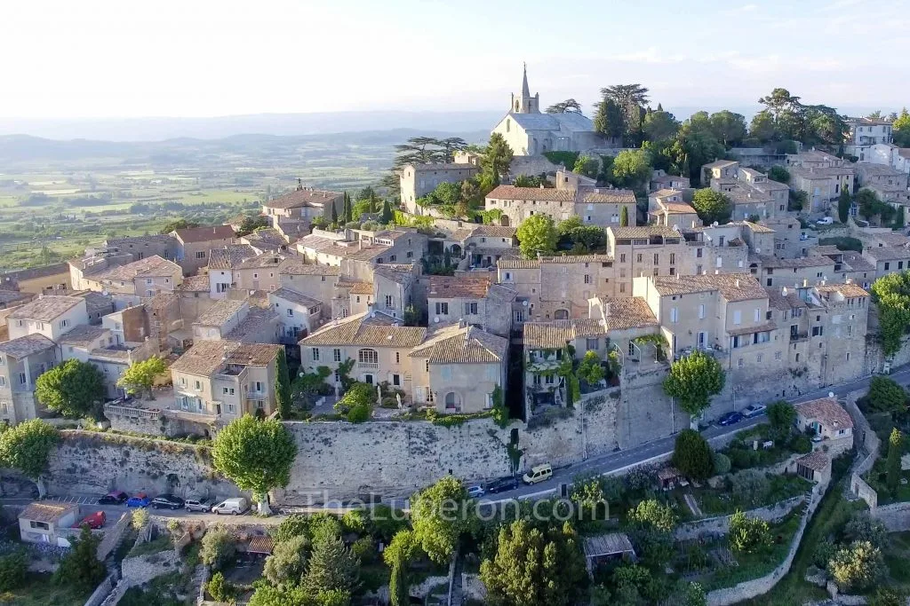

Mont Ventoux
Surnommé le Géant de Provence, il culmine à 1 909 mètres et offre des panoramas exceptionnels sur toute la région.
Découvrez les lieux naturels les plus emblématiques du Vaucluse et du Luberon.

Surnommé le Géant de Provence, il culmine à 1 909 mètres et offre des panoramas exceptionnels sur toute la région.

Cette source mythique compte parmi les plus puissantes d'Europe et attire chaque année de nombreux visiteurs.

Un paysage unique façonné par les anciennes carrières d'ocre, aux couleurs spectaculaires.

Entourée de lavandes en été, elle offre l'un des panoramas les plus emblématiques de Provence.

Les collines et villages perchés offrent des points de vue exceptionnels sur la vallée provençale.

Entre champs de lavande, vignobles et oliveraies, la nature provençale dévoile toute sa beauté.